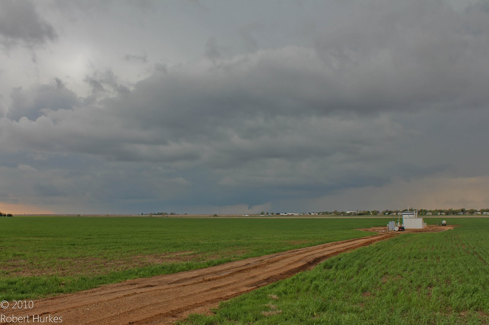

New Blog
Over ten years ago, I started my first blog, with the intention of writing an entry for every day that I went storm chasing. I quit after three posts.My first tornado wasn't exactly awe-inspiring - the picture or the details behind it. The site was built using Wordpress, and was slow due to the shared platform I chose and needlessly complex to configure the way I liked. I also didn't really understand what I wanted to write about or more importantly why I wanted to write. I've decided to give it another go for two primary reasons.
Firstly, I think that writing has always been a valuable skill to have, but will probably become more important due to the proliferation of remote-working these days. Now I'm not a great writer by any means, but the only way to get better is with practice - so this is my practice.
Secondly, there are significantly more experienced thoughts around software development, severe weather, photography and other topics. There have been multiple occasions where I've struggled to find the appropriate resource to share or have been told "you should blog about that" that it makes sense to finally do such a thing. The what and the why are actually questions I have answers for now.
Styling
I've long been a fan of Edward Tufte's work and wanted to incorporate some his ideas. I started by using Tufte CSS as a base, but felt there were a few things I needed to change:
- "Tufte yellow" didn't really appeal to me, so that was changed to a default white background
- The suggested fonts made the site feel like a Tufte publication, which isn't desirable when you're looking to create your own distinct flavor. Playfair Display is a gorgeous font
 Did you guess the inspiration behind using Playfair Display? and pairs nicely with Futura-like fonts, like Nunito Sans which is used here
Did you guess the inspiration behind using Playfair Display? and pairs nicely with Futura-like fonts, like Nunito Sans which is used here - There are a lot of examples of clean, elegant blog designs such as Jessie Frazelle's blog. I knew I wanted to make something similar - so I blended aspects of some of these sites into the Tufte base
Figures
An image is utilized by dropping a figure, which then contains a span class="marginnote" tag and an img tag.
You can also have full width figures, but giving the figure tag a class of fullwidth.
Epigraphs
The English language becomes ugly and inaccurate because our thoughts are foolish, but the slovenliness of our language makes it easier for us to have foolish thoughts.
Which blog software?
A key aspect to providing reliable software is minimizing dependencies, and hitting a database for static text seems unnecessary even with caching. Static site generators have been around for years now, and it seems silly to entertain using anything different in 2020.
Which SSG to use, however? Jekyll and Hugo are very widely used, but I'm not really into the Ruby and Golang ecosystems. Zola is one of the more feature-rich ones in the Rust ecosystem where I prefer to spend time these days, but there were a few small bugs that popped up. This is when I thought that writing my own SSG might be fun. TODO link.
Goals
- Static site: no dependencies that can break, no hosting providers, super fast page-load times. In 2020 this really shouldn't be a debate.
- No JavaScript: JavaScript leads to big, bloated sites and 3rd party tracking and privacy concerns, so it's easiest to say these blog posts are documents that don't need extra functionality.
- No Facebook referrals: Facebook has a history of privacy issues, and over 95% of its revenue is from advertising. I can't prevent friends and family from using Facebook, but I can ensure that I'm not contributing to its appeal in any way.
pub unsafe trait Alloc { unsafe fn alloc(&mut self, layout: Layout) -> Result<*mut u8, AllocErr>; unsafe fn dealloc(&mut self, ptr: *mut u8, layout: Layout); […] // about 13 methods with default implementations }
https://gemini.circumlunar.space/